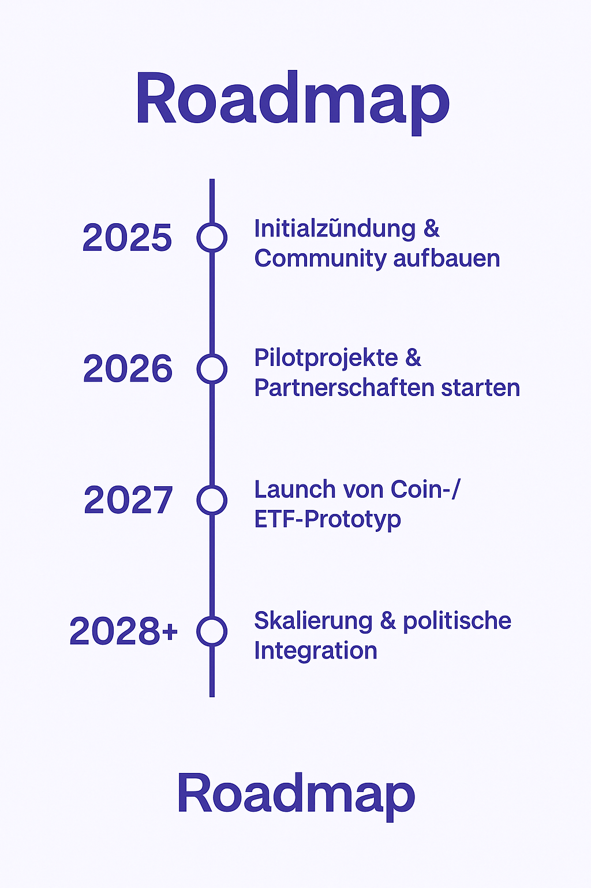

Re:Form ist nicht nur eine Idee – es ist eine Initialzündung. Für eine neue ökonomische Logik. Für einen Kapitalismus, der nicht zerstört, sondern erhält.
Wir fragen uns: Wie können ökonomische Anreize neu gesetzt werden, damit Unternehmen und Staaten aktiv für den Erhalt von Natur und Gesellschaft belohnt werden?
Noch ist das ein Anfang. Wir suchen Mitdenkende, Mitentwickelnde, Mitgestaltende.
Du möchtest dich einbringen? Dann bleib mit uns in Verbindung.
Re:Form denkt Wirtschaft neu – und das geht auch mit Kapital. Deshalb arbeiten wir an zwei Konzepten:
Ein digitaler Token, der ökologisches Engagement sichtbar macht – und belohnt. Du erhältst ihn für nachhaltiges Verhalten, kannst ihn spenden, tauschen oder einfach halten.
Wir entwickeln einen Fonds, der nur in Unternehmen investiert, die wirklich schützen, was zählt: Natur, Ressourcen, Leben. Transparent. Unabhängig geprüft. Zukunftsfähig.
Noch ist es nur eine Idee. Aber große Veränderungen fangen oft klein an.
So könnte unser Weg aussehen:
